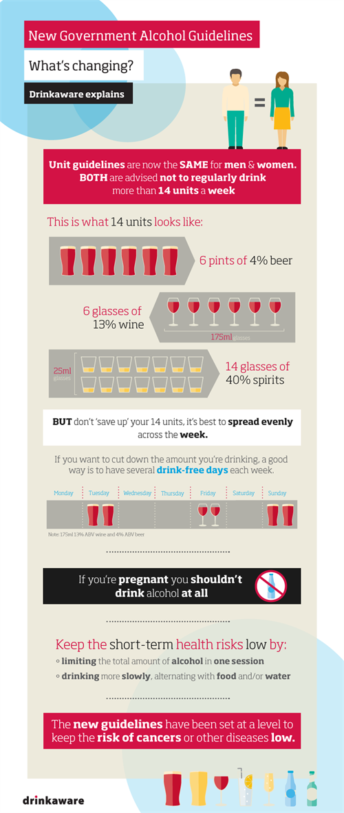

Student life and socialising can often revolve around alcohol to varying degrees and has its place if used sensibly and responsibly. However, the combination of living away from home, cheap drinks and peer pressure may change your drinking habits for the worse.
Alcohol affects our inhibitions; it can increase our confidence levels and make us feel more relaxed. However, alcohol is a depressant as it reduces the levels of serotonin which is needed to regulate our mood and therefore will affect our thoughts, feelings and how we respond to situations.
Alcohol can affect us all differently but government health guidelines recommend safe drinking levels for women and men which are measured by units. A unit of alcohol consists of 10ml of pure alcohol and on average one unit of alcohol will take an hour to leave the blood stream.
Before heading out with friends, have a plan on how you can moderate your drinking and keep yourself safe:
The government's unit guidelines state that there’s no safe level of alcohol consumption. Unit guidelines are the same for men and women and both are advised not to regularly drink more than 14 units per week.
Need help now?
Emergency Contacts